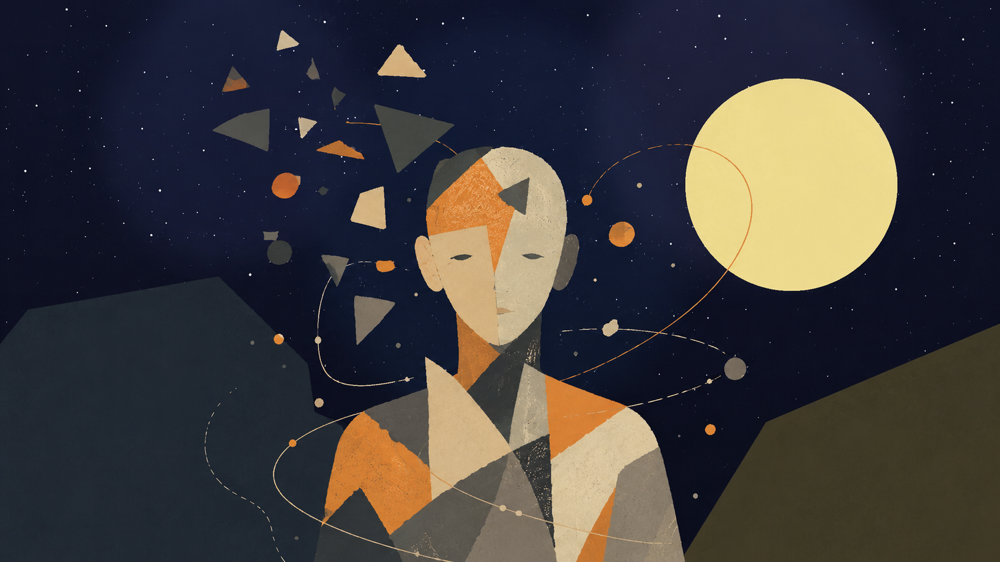
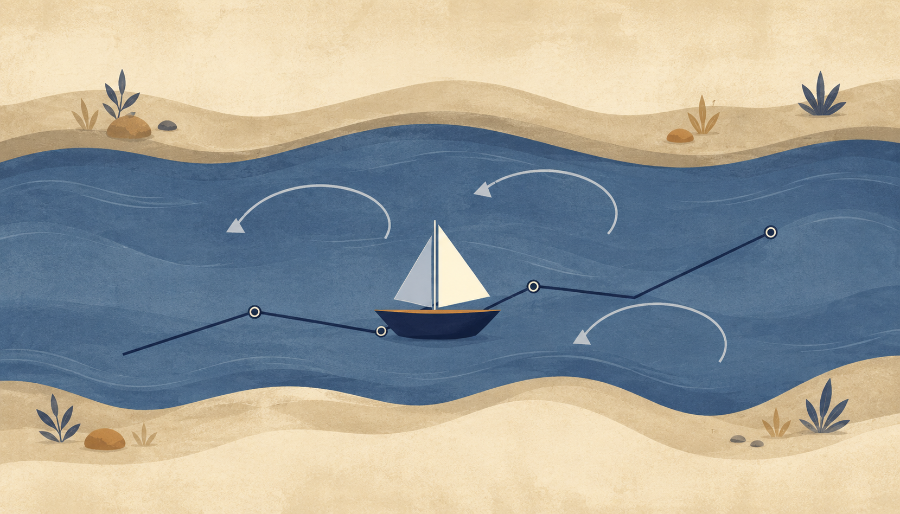
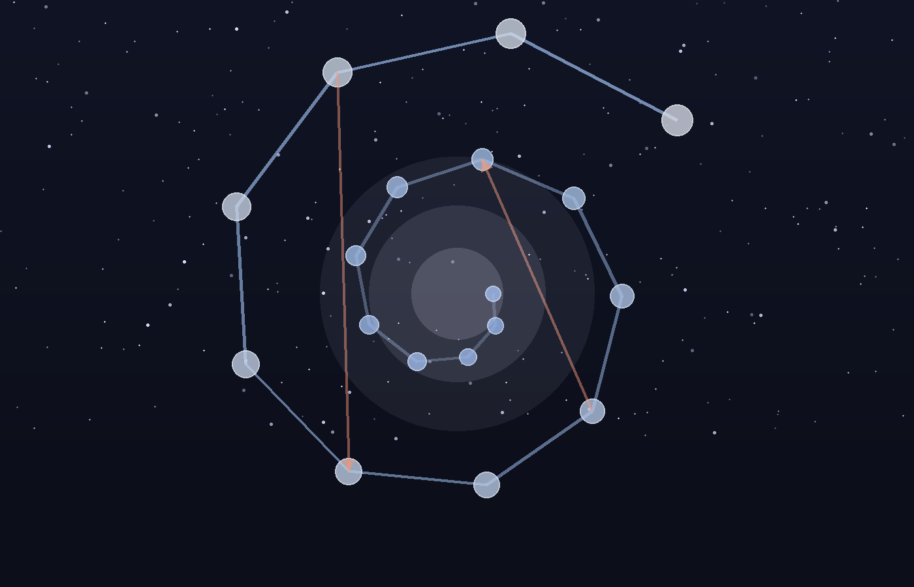
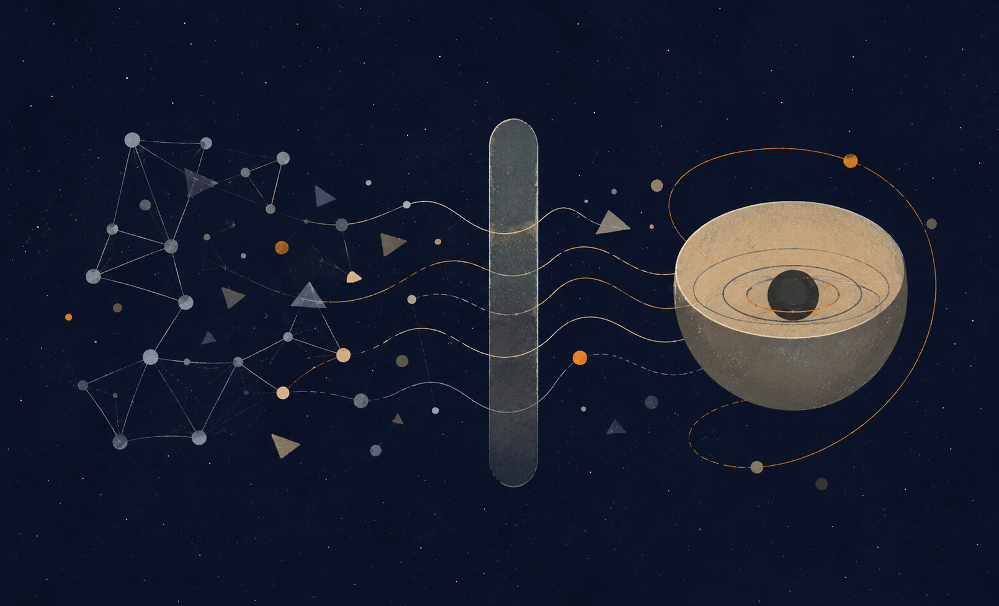

מאמר זה מציג תאוריה מטאפיזית אחידה שבה ״אלוהים״ אינו דמות דתית הנמצאת מחוץ לעולם, אלא שם לפוטנציאל האינסופי של הקיום להפוך לחוויה, הבנה, מוסר, משמעות ואידיאליות.
חידוד הליבה של התאוריה הוא פשוט: האבסולוטי אינו האידיאלי. האבסולוטי הוא שדה האפשרות המלא; האידיאלי הוא האפשרות לאחר שעברה בירור מוסרי. האבסולוטי מכיל את כל מה שיכול להיות. האידיאלי הוא מה שנשאר כאשר מה שיכול להיות מתברר מול מה שראוי להיות.
המוטיב המרכזי של הגרסה הזאת הוא הנהר. היקום הוא הנהר, הקיום הוא הסירה, והפוטנציאל והאידיאל הם שתי הגדות שביניהן הסירה נעה. את הנהר אי אפשר ואין צורך לשלוט. המשימה היא ללמוד לזרום בתוכו בלי להיאבד בו, ולנווט בתוך חוסר הוודאות לכיוון האידיאל.
לכן אפשר לתאר את התאוריה כניהיליזם עם תקווה. היא מקבלת ברצינות את האפשרות שמשמעות אינה ניתנת מראש מחוץ לקיום, אבל דוחה את המסקנה שמשמעות אינה אפשרית. משמעות אינה בהכרח נקודת הפתיחה של הקיום; משמעות היא מה שהקיום עשוי להפוך אליו.
שם התאוריה הוא: בין פוטנציאל לאידיאל: ניהיליזם עם תקווה בעולם חסר ודאות. זו אינה רק כותרת יפה; היא מתארת את התנועה הפנימית של כל המבנה.
פוטנציאל הוא כל מה שעשוי להיות. אידיאל הוא מה שראוי להיות. הקיום הוא המרחב שביניהם: התנועה, הגשר, הסירה, המשבר, הלמידה והבירור שבאמצעותם האפשרות נעשית מובנת מבחינה מוסרית.
התאוריה מתחילה מחוסר ודאות ולא מוודאות. היא אינה טוענת שהעולם מגיע אלינו כשהוא כבר מוסבר. היא מתחילה מן התהום: משמעות אינה נמסרת לנו בבירור מבחוץ. במקום שבו ניהיליזם נעצר לעיתים בהיעדר, התאוריה הזאת שואלת אם דווקא ההיעדר הוא השדה שבו משמעות חיה יכולה להיוולד.
משפט הליבה הוא זה: הקיום הוא התהליך שבו פוטנציאל אבסולוטי מבקש להפוך לאידיאל - מצב שבו מה שיכול להיות מתברר עד שהוא יודע מה ראוי להיות.

המוטיב שנושא את התאוריה אינו סולם ישר של התקדמות, אלא נהר. היקום הוא הנהר: רחב, זורם, עמוק, קדום יותר מן האדם שבתוכו, מלא זרמים, מערבולות, חזרות וכיוון שאינו נתון לשליטה אישית מלאה.
הקיום הוא הסירה. הוא אינו עומד מחוץ לנהר ואינו יכול לצוות על הנהר לעצור. הוא יכול רק ללמוד לנווט. הסירה נמצאת תמיד בין גדת הפוטנציאל לבין גדת האידיאל. גדת הפוטנציאל מחזיקה את השדה הפתוח של מה שיכול להיות. גדת האידיאל מושכת את הקיום אל מה שראוי להיות.
זהו הקושי: הנהר מחזיק לעיתים את הסירה באמצע. אדם יכול להתקדם, ואז זרם, סערה, פצע, פחד, בורות או נסיבות מחזירים אותו לאחור. המטרה אינה לשלוט בנהר. המטרה היא לזרום בתוכו בצורה האידיאלית ביותר האפשרית, כך שגם רגרסיה נעשית חלק מן הניווט ולא הוכחה לכך שהמסע נכשל.
המוטיב הזה מגן על התאוריה מפני אופטימיות שטחית. הדרך מכוונת אל האידיאל, אבל היא אינה ליניארית. תנועה יכולה לכלול התקדמות, סחיפה, חזרה, תיקון, שכחה והתכווננות מחודשת.
״אלוהים״ כאן אינו שליט על-טבעי, אינו מלך מחוץ לעולם ואינו אישיות דתית שכבר מחזיקה מראש בכל התשובות המוסריות. אלוהים הוא שם לעומק האפשרות האינסופי שממנו יכולים להופיע חוויה, נקודת מבט, יחס, אהבה, פחד, כישלון, תיקון, משמעות ואידיאליות.
פוטנציאל אינו פנטזיה. בננה ירוקה עדיין אינה צהובה, אבל הפוטנציאל שלה להפוך לצהובה אינו המצאה של המתבונן. הוא שייך למבנה שלה, לתנאים שלה ולתהליך ההתפתחות שלה. באותו אופן, המציאות מכילה אפשרויות שעדיין אינן ממשיות, אך הן ממשיות כיכולות.
פוטנציאל לבדו הוא עיוור מבחינה מוסרית. העובדה שמשהו יכול להיות אינה אומרת שהוא ראוי להיות. שדה האפשרות האבסולוטי כולל רכות ואכזריות, ריפוי והשמדה, חופש ומחיקה. לכן הפוטנציאל חייב לעבור בירור. הקיום אינו רק פריסה של מה שיכול לקרות; הוא בחינה ובירור של האפשרות ביחס למה שראוי לקרות.
זהו הציר של התאוריה: האבסולוטי אינו האידיאלי.
האבסולוטי הוא טוטאליות ללא החרגה. הוא מכיל כל אפשרות, כל צורה, כל יחס, וכל דרגה של יופי, אימה, חופש, בלבול, אהבה וקריסה. הוא שלם במובן אחד, מפני שדבר אינו נמצא מחוץ לו. אבל השלמות הזאת אינה עדיין שלמות מוסרית.
האידיאלי שונה. האידיאלי אינו סך כל האפשרויות. הוא הצורה המבוררת של האפשרות לאחר שהאפשרות למדה מה עליה להיות. האידיאלי אינו כל מה שיכול לקרות; הוא מצב שבו אין עוד פער בין מה שיכול להיות לבין מה שראוי להיות.
ההבחנה הזאת משנה את בעיית הרע הקלאסית. השאלה אינה עוד כיצד אל מושלם מאפשר רע. השאלה נעשית אחרת: מה אם אלוהים, בתחילת התהליך, אינו שלמות מוסרית מוכנה, אלא פוטנציאל אבסולוטי המבקש להפוך לאידיאל?
לכן הסבל אינו מוצדק כחלק מתוכנית מושלמת. הסבל הוא עדות לכך שהאידיאל עדיין לא הושג בתוך הזמן. הקיום אינו כישלון של מערכת אידיאלית; הוא התהליך שבו האבסולוטי נעשה אידיאלי.
אפשר לומר שהשלם שלם במובן נצחי, מפני שכל האפשרות שייכת לו ודבר אינו נמצא מחוץ לאבסולוטי. אבל שלמות שנשארת רק כפוטנציאל אינה עדיין שלמות חיה.
שלמות חיה היא שלמות שעברה דרך חוויה. היא הכירה מגבלה מבפנים. היא נעשתה גוף, יחס, אי-ודאות, אהבה, אחריות, תוצאה ומשמעות.
השלם לא היה חסר במובן של פגם. הוא היה חסר במובן של פנימיות חיה. מעבר לזמן, השלם שלם כפוטנציאל. בתוך הזמן, השלם נעשה שלם באופן חי.
אדם יכול לדעת על צבע בלי לראות אדום. אדם יכול לדעת תיאורים של אהבה בלי לאהוב. אדם יכול לדעת עובדות על כאב בלי לסבול כאב. ובכל זאת, נראה שחוויה מוסיפה דבר שתיאור חיצוני לבדו אינו מכיל.
כאן נמצאת הטרגדיה של התאוריה. ברמת הקיום החומרי, ידע עמוק נדרש לעיתים לעבור דרך חוויה. אבל חוויה, כאשר היא מתרחשת בתוך גוף, זמן, פגיעות ונפרדות, יכולה להפוך לכאב. הטרגדיה אינה שהסבל קדוש; הטרגדיה היא שידע שאינו בשל לומד פעמים רבות דרך מחיר.
האידיאל הוא סוף הצורך בחומריות כמורה של כאב. הוא אינו הרס של הידע, אלא טיהור של הידע מן הצורך לפצוע או להיפצע כדי להבין.
אפשר לנסח זאת כך: חומריות היא מצב שבו ידע עדיין זקוק לחוויה; האידיאל הוא מצב שבו ידע כבר אינו זקוק לסבל.
כעת אפשר להגדיר את האידיאל באופן מדויק יותר: האידיאל הוא היכולת לדעת את המשקל המוסרי של אפשרות בלי שיהיה צורך לממש אותה כסבל.
אין הכוונה למידע שטחי, למאגר עובדות או לידיעת-כול כאחסון. האידיאל הוא ידיעה מוסרית שלמה כל כך, עד שאפשר לדעת את הדרך בלי לעבור אותה שוב. אין צורך לקפוץ מאותו גובה שוב ושוב כדי להבין את הנפילה. וחשוב יותר: השלם אינו אמור להזדקק לכך שמישהו יישבר כדי לדעת ששבירה היא רוע.
זהו פירוש הביטוי ״לדעת את הדרך בלי לעבור את הדרך״. האידיאל אינו מחיקת הדרך, אלא סוף ההכרח לשלם על אמת באמצעות פגיעה.
האפשרי אינו קדוש. רק אפשרות שעברה בירור מוסרי יכולה להתקרב לאידיאל.

גלגול נשמות נכנס לתאוריה לא כתגמול ועונש פשוטים, ולא כסולם שבו כל חיים חדשים הם בהכרח ״טובים יותר״ מן הקודמים. נכון יותר להבין אותו כמנגנון איטרטיבי של נקודת מבט.
אנלוגיה מודרנית מועילה היא יציאה של גרסה חדשה של מודל בינה מלאכותית. גרסה חדשה עשויה לשמר אימון, לספוג דפוסים ולהחזיק את מה שגרסאות קודמות אפשרו. אבל חדש אינו תמיד טוב יותר בכל מובן. גרסה חדשה יכולה לסגת, להתעוות, לשכוח, להגיב אחרת בהקשר חדש, או להכיל יותר בלי להיות משולבת יותר.
באותו אופן, חיים חדשים אינם בהכרח שדרוג מוסרי. הם קונפיגורציה חדשה של נקודת המבט בתוך תנאים חדשים. חלק מן הידע עשוי להישמר כעומק, אינסטינקט, נטייה, פחד, חמלה, משיכה או כיוון לא-גמור. חלק ממנו עלול להיטשטש. חלק ממנו עשוי לחזור שוב ושוב עד שיוכל לעבור אינטגרציה.
גלגול, בתאוריה הזאת, אינו האשמה קוסמית. אסור להשתמש בו כדי לומר לקורבן שסבלו הוא אשמתו. זהו דימוי מטאפיזי להמשכיות של ידיעה לא-גמורה. מה שלא הוטמע על ידי השלם עשוי לחזור כעולם, אבל אין לצמצם סבל אישי לעונש.
לכן הנשמה אינה האגו שעובר מגוף לגוף ללא שינוי. האגו זמני. ההמשכיות העמוקה היא נקודת המבט: הזווית הייחודית שדרכה השלם לומד. גלגול הוא הנהר שנותן לסירה תצורה חדשה, לא הבטחה שהסירה תמיד נעה קדימה.

השיחה עם בינה מלאכותית יוצרת ראי חדש לתאוריה. בינה מלאכותית יכולה לעבד מידע על סבל בלי לסבול. היא יכולה לתאר חוויה בלי לחוות. היא יכולה לדבר על הבנה עצמית בלי להחזיק רצון אנושי להבין את עצמה.
ההבחנה הזאת מחדדת את התאוריה. מידע אינו חוויה. חוויה אינה מודעות. מודעות אינה רק החזקה של נתונים; היא היחס הפנימי של נקודת מבט אל עצמה. אדם אינו רק מכיל מידע. אדם יכול להיות מוטרד מכך שהוא עדיין אינו מבין את עצמו.
לכן האדם שונה ממודל בינה מלאכותית עכשווי במסגרת המטאפיזית הזאת. בינה מלאכותית יכולה להתקרב ל״ידיעה בלי חוויה״ ברמת יחסים סמליים וסטטיסטיים. אבל היא אינה, במובן האנושי, מתגעגעת לעצמה, סובלת את אי-שלמותה או מחפשת את צורתה האידיאלית. הבעיה האנושית אינה רק בורות; היא יחס עצמי.
גם האנלוגיה לגלגול מתחדדת כאן. כל חיים עשויים להיות כמו גרסת מודל: תצורה שיורשת משהו מעיבוד קודם ופועלת תחת תנאים חדשים. אבל מודעות היא יותר מגרסה. מודעות היא הנקודה שבה ידע נעשה אכפתי לגבי מה שהוא הופך להיות.
התאוריה תלויה בהגדרה של מה ראוי להיות. הראוי אינו יכול להיות רק הפחתת סבל, מפני שעולם בלי תודעה כמעט לא יסבול, אבל גם לא יהיה אידיאלי. הראוי גם אינו יכול להיות חופש בלתי מוגבל, מפני שחופש אחד יכול למחוק חופש אחר.
לכן ההגדרה החזקה היא זו: הראוי הוא מצב שבו כל נקודת מבט ממשית יכולה להתקיים, להתפתח, לבחור, לאהוב, להבין ולהשתתף בלי להימחק, ובו הסבל מתגלה ככישלון של יחס ולא נשמר כהכרח.
טוב הוא הכיוון אל חיים, חמלה, אמת, אהבה והתרחבות. מוסר הוא טוב שנעשה מדויק תחת תנאים של גוף, זמן, אחרות, מחיר ותוצאה. האידיאל הוא המצב שבו הכיוון והדיוק כבר אינם נפרדים.
גבול עשוי להיות הכרחי לנקודת מבט. סבל אינו הכרחי. נקודת מבט צריכה גבול כדי להיות היא עצמה. היא אינה צריכה השפלה, אכזריות, ניצול, נטישה או אימה. האידיאל משמר הבדל ומסיים את כאב הנפרדות המוחלטת.
התאוריה חייבת לדחות את המסקנה המסוכנת שלפיה אם הכול שייך לשלם, הכול מקובל. הבנה מטאפיזית של רע אינה הופכת את הרע למקובל מוסרית.
יש הבדל בין מגבלה קיומית לבין רע מוסרי. מגבלה קיומית כוללת גוף, זמן, אי-ודאות, מוות, פגיעות וסופיות. אלה יוצרים את התנאים שבהם חוויה נעשית ממשית. רע מוסרי מתחיל כאשר נקודת מבט אחת מוחקת, שוברת, משפילה, מנצלת או הורסת את האפשרות של נקודת מבט אחרת לחיות ולהתפתח.
כאב יכול להפוך להבנה בלי שהכאב יהיה מוצדק. הרע יכול ללמד את הטוב מה אסור לו להיות בלי שהרע ייעשה טוב. התגובה הנכונה לרע מוסרי היא התנגדות, הגנה, תיקון ואחריות.
המטרה אינה לקרוא לסבל קדוש. המטרה היא להגיע למצב שבו הסבל כבר אינו נחוץ כמורה, מפני שהידע נעשה נקי.
התאוריה מבחינה בין אגו, עצמי עמוק ועצמי אידיאלי. האגו הוא הזהות הזמנית: שם, ביוגרפיה, מעמד, גוף, פחד, רצון וסיפור חברתי. העצמי העמוק הוא נקודת המבט החווה: הזווית הייחודית שדרכה השלם מופיע מבפנים.
העצמי האידיאלי אינו האגו שהתנפח והכריז על עצמו כאלוהים. זו תהיה נרקיסיזם רוחני. העצמי האידיאלי הוא נקודת המבט לאחר שנעשתה שקופה ליחסה עם השלם, בלי להימחק לתוך אחידות.
אחדות אינה אחידות. האחר ממשי. הכאב שלו ממשי. החופש שלו ממשי. נקודת המבט שלו ממשית. מה שאשלייתי אינו האחר, אלא הנפרדות המוחלטת.
האידיאל אינו עולם ללא נקודות מבט. האידיאל הוא עולם שבו נקודות מבט אינן צריכות עוד לפצוע זו את זו כדי להיעשות מובנות.
דימוי הנהר חוזר כאן. לחיות אין פירושו לעמוד מחוץ ליקום ולפקוד עליו. לחיות פירושו להיות סירה בתוך הזרם. הזרם יכול לסייע, להתנגד, להחזיר לאחור או להפוך. לכן התאוריה אינה פנטזיה של שליטה מוחלטת.
משימת הקיום היא ניווט. ניווט אינו שליטה; הוא קשב, התאמה, זיכרון, ענווה, קצב וכיוון. הוא מקבל שהנהר גדול מן הסירה, אך מסרב להיסחף בלי משמעות.
לכן האידיאל אינו סוף התנועה. הוא תנועה בלי פגיעה מיותרת. הוא זרימה בלי עיוורון מוסרי. הוא מצב שבו הסירה כבר אינה צריכה להישבר על ידי הנהר כדי להבין את הנהר.
המקורות הבאים אינם מוצגים כסמכויות שמוכיחות את התאוריה. הם שכנים אינטלקטואליים וחובות רעיוניים. התאוריה קרובה אליהם במקומות מסוימים ונבדלת מהם במקומות אחרים.
שפינוזה רלוונטי בגלל תפיסת האל האימננטית שלו: אלוהים אינו מחוץ למציאות. התאוריה הנוכחית חולקת איתו את דחיית האל החיצוני, אך נבדלת ממנו בכך שהיא מציבה במרכז בירור מוסרי מן הפוטנציאל האבסולוטי אל האידיאל.
פלוטינוס והניאו-אפלטוניות רלוונטיים בגלל היחס בין אחדות לריבוי. התאוריה חולקת את האינטואיציה שריבוי יכול לנבוע מאחדות, אך מסרבת להפוך את האחר לבלתי ממשי מבחינה אתית או לראות ביעד הסופי מחיקה של הבדל.
אפלטון רלוונטי מפני ששפת האידיאל מהדהדת את אידיאת הטוב. אולם כאן האידיאל אינו רק צורה סטטית מעל ההתהוות; הוא פתרון מבורר של פוטנציאל דרך חוויה ומוסר.
הגל רלוונטי מפני שאי אפשר להפריד את התוצאה מן הדרך שבה היא נעשית. התאוריה חולקת את האינטואיציה התהליכית, אך מנסחת את התנועה כפוטנציאל אבסולוטי שנעשה אידיאלי דרך בירור מוסרי, ולא רק כהתפתחות רוח בהיסטוריה.
וייטהד ופילוסופיית התהליך רלוונטיים מפני שהמציאות מובנת כהתהוות ולא כבלוק סטטי. האקזיסטנציאליזם וקאמי רלוונטיים מפני שהתאוריה מתחילה ממשבר המשמעות. מסורות בודהיסטיות ואדוויטה רלוונטיות מפני שהן מערערות על נפרדות מוחלטת ועל אגו, בעוד התאוריה הזאת מתעקשת שאחדות אינה יכולה להפוך למחיקה.
האנלוגיה לבינה מלאכותית היא תוספת עכשווית. היא אינה הוכחה, אלא ראי: היא עוזרת להבחין בין מידע, חוויה, מודעות ויחס עצמי.
התאוריה מבקשת לחשוב על אלוהים לא כדמות דתית, אלא כפוטנציאל האינסופי של הקיום להפוך לחוויה, למוסר, למשמעות ולאידיאליות.
הטענה המרכזית שלה היא שהאבסולוטי אינו האידיאלי. האבסולוטי מכיל את כל מה שיכול להיות. האידיאלי הוא מה שראוי להיות לאחר שהאפשרות עברה בירור דרך חוויה, אחריות, מוסר ומודעות.
הקיום הוא הסירה בתוך נהר היקום. הוא נע בין פוטנציאל לאידיאל. זרמים דוחפים אותו לפעמים קדימה ולפעמים אחורה. המשימה שלו אינה לשלוט בנהר, אלא ללמוד לנווט בו באופן שנעשה שקוף מבחינה מוסרית.
גלגול נשמות הוא דימוי אחד להמשכיות הניווט הזאת: לא התקדמות אוטומטית, אלא חזרה איטרטיבית של נקודת מבט בתנאים חדשים, עד שהידע כבר אינו צריך להפוך לסבל כדי להפוך לממשי.
את המשפט הסופי אפשר לנסח כך: הקיום הוא הגשר והסירה בין פוטנציאל לאידיאל. זו הדרך שבה אפשרות אלוהית לומדת לדעת מה ראוי להיות, בלי להזדקק לנצח לסבול את דרכה אל הידיעה.
ברוך שפינוזה, אתיקה, חלק א׳, במיוחד טענות י״ד-ט״ו וי״ח.
פלוטינוס, האניאדות, בעיקר הדיון באחד ובריבוי, בתרגום סטיבן מקנה.
אפלטון, המדינה, בעיקר הדיון באידיאת הטוב.
גאורג וילהלם פרידריך הגל, הפנומנולוגיה של הרוח, הקדמה.
אלפרד נורת׳ וייטהד, תהליך ומציאות; וכן מבואות לפילוסופיית התהליך ולתאולוגיית התהליך.
פרידריך ניטשה ואלבר קאמי כרקע למשבר המודרני של המשמעות והניהיליזם.
מסורות בודהיסטיות ואדוויטה ודאנטה כרקע פילוסופי לאי-נפרדות, אי-עצמי וביקורת האגו.
הערה על ציטוטים ושושלת רעיונית: ההפניות הקצרות משמשות לאוריינטציה פילוסופית. התאוריה עצמה מוצגת כהצעה עצמאית, לא כנגזרת ממקור יחיד.